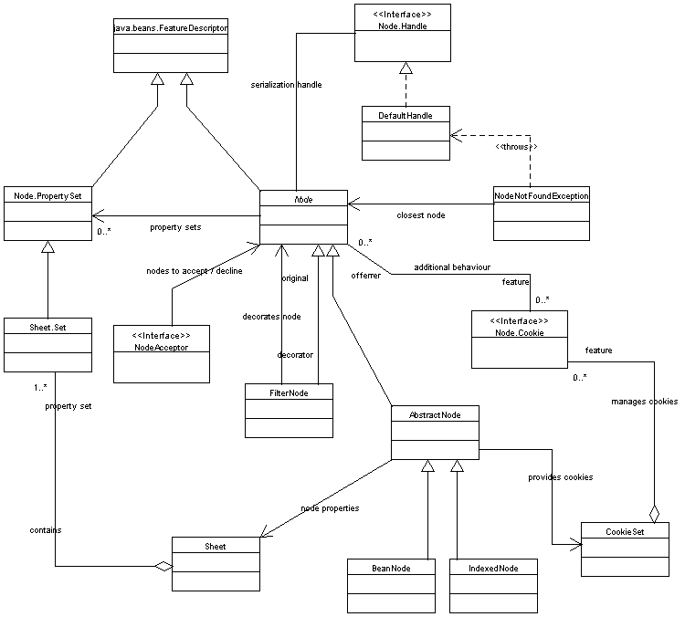
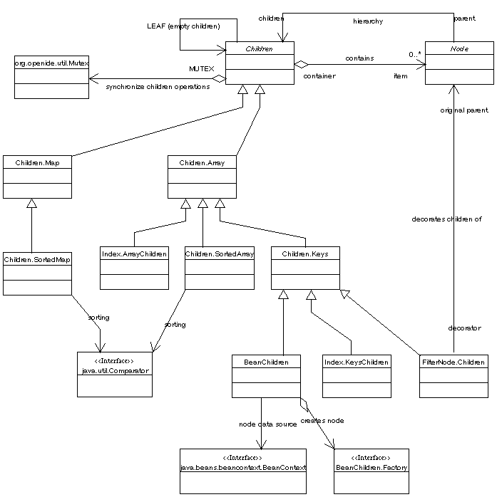
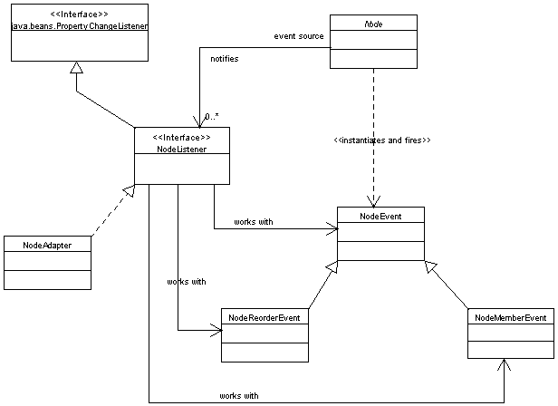
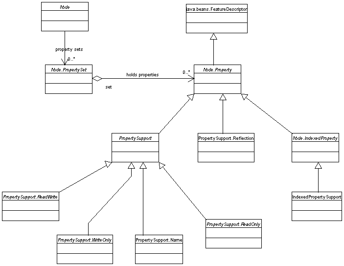

Overview
Javadoc
The Javadoc for this API resides in
org.openide.nodes.
In particular, the class
Node
is the logical starting point.
Contents
Nodes API
The Nodes API controls the usage and creation of
nodes, which are a variant of JavaBeans that may have
adjustable property sets; provide cookies and actions; be visually
displayed in the Explorer with full hierarchy support; and other
features.
What is a Node?
A node provides the visual representation and apparent behavior of
most objects in NetBeans. It may be used to represent a data object
from the Datasystems API (and provide a more UI-friendly wrapper
around that data object), or it may be created separately for a
special purpose. For example, every icon displayed in the Explorer is
a node, and this is the primary UI interface to the entire hierarchy
of nodes. (Many dialog boxes, the Component Palette, and so on, also
operate based on nodes, via the Explorer API.)
Nodes themselves ought not be used to hold actual data; that should
be stored in a data object, or in some other appropriate storage
mechanism. Rather, they provide a presentation device for existing
data.
JavaBeans and nodes
A node is a sort of extension to the JavaBeans concept, adding some
features that were necessary for the full functioning of explorer views. Some
key components that were missing from the
JavaBeans specification:
- Full hierarchy support. The Java 2
Bean Context API
provides basic support for hierarchies of Beans in a tree structure,
but not enough to handle the requirements of NetBeans, such as special
support for various kinds of child containment policies.
- Cookies, actions, and other NetBeans-specific interfaces are better
placed as direct Java-level API requirements, rather than always
needing to use casts or introspection to determine their availability.
- Certain basic operations on nodes, such creating a serializable
form of the node, or cut-and-paste support, are better implemented as
an abstract base class.
- Most importantly, regular use of JavaBeans requires that
introspection be used whenever property lists are required for an
object. This is a very frequent operation which was found to have
unacceptable overhead. Also, introspection, due to the nature of Java
and the Bean architecture, prevents dynamic modification of the set of
properties supported by an object, which the Nodes API permits.
That said, the JavaBeans architecture was by no means ignored while
designing the Nodes system; it was used as a conceptual foundation. To
blur the distinction,
special node
implementations are available which wrap around standard JavaBeans
and present them as nodes, including handling any Bean Context
available, introspected properties, and so on.
Nodes in the Explorer
Using the
Explorer API,
you can create a variety of different
presentations for any tree or subtree of the Nodes
hierarchy.
The Explorer interactions with nodes include actions that the node
provides (generally available in a right-click context menu);
cookie-based action enabling (so that the node selection affects the
availability of system actions, like Compile); cut, copy, and paste
support, as well as reordering of children, deletion, and creation of
new children; displayable names and icons, which may be sensitive to
the state of the node; and so on.
Importantly, nodes are not dead data - they are live components.
So, actions taken in one part of the system will frequently
cause open Explorer views to refresh to display the new node structure
(for example, after pasting a component onto a form); and conversely,
actions that seem natural to do in the Explorer will usually be
accessible there through its interface and update the rest of the
system accordingly (for example, deleting a toolbar button in the
Environment subtree has immediate effect). These capabilities owe to
the rich event notification supported by the
Nodes API.
Common node types
This is a partial list of common types of nodes, some more apparent
than others, to give an idea of what is possible with the API:
- Data nodes, based on data objects. A simple example would be the
node created for an HTML file on disk: you can edit it, open it in the
browser, move it about, and so on.
A more complex example is a Java class representing a form - this
node actually has one child subtree representing the Java source
hierarchy (classes, methods, and fields); and one subtree representing
the AWT/Swing component hierarchy (frames, panels, buttons,
etc.). Each type of subnode has its own behavior - for example, the
component nodes can display Layout and Events property sheets, and if
containers, can permit pasting in of components onto the form.
- Data folder nodes, possibly representing Java packages. These
allow creation of new objects from template, compilation across the
package, and so on.
- A user-developed JavaBean on disk. The user is able to customize
it, serialize it, and so on.
- A node derived from a JavaBean, not representing one - in this
case, the node's actual behaviors and properties would literally be
the same as those of the JavaBean. The Bean would not generally be
stored in a user filesystem, and its node may be present anywhere.
- Settings in the (old) Advanced Options. These are used for their
property sheets, which dynamically modify aspects of NetBeans'
behavior and persist across sessions.
- The Component Palette - the list of tabs, and the components on
each tab, are actually nodes, and in fact the same nodes as appear in
the Explorer under the Component Palette folder. The same is true of
workspaces, actions on the toolbars, and so on.
- A breakpoint in the debugger is a node, as well as the folder
containing all breakpoints. The special Debugger window just displays
these in a specific way.
- A project desktop node contains various files associated only with
a specific project, as well as settings controlling aspects of that
project's operation, such as a build procedure.
The point is that most aspects of UI integration can be handled well
with appropriate use of nodes; modules which use them to good effect
will blend into the rest of NetBeans naturally from a user's perspective,
and probably be easier to write as well.
Creating Custom Nodes
This section details the steps you must take to create various kinds
of customized nodes. In simple cases, you need do very little, as
there exist prebuilt default implementations. For more sophisticated
nodes, for example containing a structured list of children of a
particular type (as is the case with e.g. the Active Processes list),
some more work is necessary, but again much of it will involve
subclassing existing supports.
General Aspects
All nodes must subclass the general
Node
abstract class. However, in practice it is most common to actually
subclass a convenient base class,
AbstractNode,
or one of its subclasses. Your node class needs to specify a list of
child nodes in the constructor (the contents of which may be changed
later, but not the identity of the Children object
itself); for the case of a leaf node, just pass in
Children.LEAF.
As this class is not abstract, there are no strict requirements on
what needs to be overridden. However, the following general methods
you are likely to want to override:
AbstractNode.canCopy()
and related methods (for cutting, renaming, and destroying) are all
true by default, so that the node may be moved around somewhat
arbitrarily (though to paste requires the permission of the new
parent, of course). If it is inappropriate for your node to be
relocated as data in this way, you should turn these abilities
off. See the section on edit operations for
details.
- The node has two names - a system name and a display name. The
display name is the human-presentable name actually displayed next to
the icon in the Explorer, and so forth, and its use is quite free. The
system name should be set to something simpler, and ought not be
tampered with gratuitously (unless the node is explicitly
renamed) - this is because it is used for internal purposes such as
reconstituting a node after serialization.
You may set these explicitly with
Node.setName(...)
and
Node.setDisplayName(...),
or you may want to take advantage of AbstractNode's
ability to have the display name be calculated implicitly from the
system name by means of a
format string.
There is also a
short description
which is intended for things such as tool tips on the node.
- Almost all nodes should have a properly set icon. You may actually
specify a set of icons according to whether small or large icons are
to be used, whether the node's hierarchy (if applicable) is expanded
or collapsed, etc. The best approach is to use
AbstractNode.setIconBaseWithExtension(...)
to set the base name for the icon image resources.
Properties, sets, and sheets
There are three levels of organization for node properties:
- Properties,
which represent individual settable properties of the node object,
with a definition class and so on, very similar to JavaBean properties
(and in fact extending
Bean features).
- Property sets,
which are just collections of properties that typically would be
displayed together - for example, all the event handlers for a form
component.
- Sheets,
which group together several named property sets - for example, the
same form component may also have a normal Bean property set
(foreground, etc.), and an expert set (with rarely-used properties).
Nodes are only required to cluster properties into sets, by
implementing
Node.getPropertySets();
but sheets are convenient to handle, and they may be used from an
AbstractNode, for example by overriding
AbstractNode.createSheet()
to provide the basic list of property sets desired for the
node. (You should get the sheet set you need from it, checking
whether it really exists yet, add properties to the sheet set, and
then replace it into the sheet to be sure your changes take
effect.)
Each property has a few interesting aspects to it:
There are a number of support classes from Node.Property
which provide useful refinements:
PropertySupport.Name
creates a property specifically binding the node's name (system name,
not display name; if you are using AbstractNode, handling
the system name only should suffice). This support ought to be used by
any node for which it makes sense for the user to modify the name in
the property sheet. If modifying the name should be permitted but
would need to trigger other changes, the support probably would not be
helpful (or it could be subclassed).
IndexedPropertySupport
helps create indexed properties.
PropertySupport.ReadOnly
and similar classes restrict the directionality of the property.
PropertySupport.Reflection
helps create a property based on JavaBean introspection.
You may group whatever properties are needed for your node into
different sets as desired (or put them all into one set, if there is
no useful distinction); note that the property sets are also feature
descriptors, and so may have internal and display names, etc.
Naturally, common node implementation classes such as
DataNode
may automatically create a sheet with some useful properties on it;
then this sheet should generally be appended to by overriding
AbstractNode.createSheet()
and calling the superclass method first.
For complex nodes, such as a system option controlling the
appearance of an entire editor, it may be cumbersome for the user to
edit individual properties, especially without getting a holistic
preview. If this is the case, a customizing GUI component may be
returned from
Node.getCustomizer(),
and
Node.hasCustomizer()
turned on. The exact way in which the customizer will be displayed is
determined by NetBeans, but typically it will be popped up in a dialog
or non-modal window; it should be tied to the node's properties
however appropriate.
If a full customizer is not required, individual properties may
still have a custom editing style associated with them;
Node.Property.getPropertyEditor()
is used to look for a property editor, defaulting to the standard
JavaBeans property editor for the appropriate type.
Note that the Nodes API, unlike JavaBeans, permits a specific
instance of
PropertyEditor
to be associated with the node, not just its class - so if you override
getPropertyEditor(), it is possible to select an editor
based on the current state of the node (for example, a table may have
a completely different editor when it is bound to a SQL rowset), or to
keep an initialized editor associated with a node that may have some
UI state not kept in the node itself.
Hierarchy nodes and their children
Creating a leaf node - a node with no children - is fairly
straightforward, since the child list may simply be specified as
Node.EMPTY.
To create a hierarchy node that will act as a parent for other nodes,
you must consider both what type of children it will have, and how
those children should be managed.
The basic data structure for managing a child list is
Children,
which is not likely to be subclasses directly but rather used in the
form of one of the support classes available for it. Note that the
node must keep the same children object throughout its lifetime, and
the children object is responsible for managing the addition, removal,
and structure of children under it.
A simple child list may be created with
Children.Array.
You need only create it with the default constructor, and add child
nodes to it (at any time, or remove them later for that matter) using
Children.add(...).
If it is desirable that the children be sorted when displayed, you can use e.g.
Children.SortedArray
to do this. In this case, the comparator (i.e. sort criteria) can be
changed at any time.
If the children need to be accessed based on keys, as in a
hashtable, this is possible with
Children.Map
(and also
Children.SortedMap).
Along similar lines,
Children.Keys
permits clustering of the children by key, where several children may
be associated with one key. This class may be especially useful when
mirroring an external hierarchical system into a node hierarchy, such
as Java class hierarchies, which need the children to be partitioned
in a certain way (e.g. methods vs. fields).
This document will not go into the details of subclassing children
lists, since doing so is not likely to be required very
frequently - the provided support classes should handle the common
cases. If it is necessary to subclass, the documentation for
Children should suffice.
Indexing and reordering children
Many structural constraints on children are probably satisfied by the
children class itself - i.e. using Children.SortedArray
guarantees that your children will be properly sorted without any work
beyond providing the comparator. However, for an unsorted child list
it may be useful to provide support for directed reordering of the
children.
Generally you will want to make the children rearrangeable by
the user, as well as by external code. To do so, you should implement the
Index
cookie on your node, which exists to handle this case. This cookie provides ways
for the user to move particular children around, or to undertake a
complete rearrangement using a
dialog box.
There is a generic
support class
which implements the raw requirements of the cookie, but this is
usually used in a more friendly form by using a special children
implementation such as
Index.ArrayChildren.
This implementation stores a list of children and makes it
straightforward for the user to manipulate the order in several ways.
Cookie and action support
One important ability provided by the Nodes API is to associate
cookies and actions with nodes. What cookies are and how to create
them is explained in the
Datasystems API
Actions in general are likewise described by the
Actions API.
(If your node is actually a
DataNode
representing a data object, there are already some conventions for
attaching actions and cookies to the node, which prepopulate certain
entries based on the data loader and/or data object. The Datasystems
API describes these defaults.)
Attaching cookies to a node, so that it will be considered to
implement certain behaviors, is quite straightforward. The basic
interface for retrieving a cookie is
Node.getCookie(...).
However, this is abstract in Node, and also
Node itself does not set any policy for settings up the
cookies for a node or changing them.
Rather, if you are subclassing AbstractNode, you may
use
AbstractNode.setCookieSet(...)
to specify a set of cookies to be returned by the node (and you should
merge your cookies with those provided by the superclass, as a
rule). The
CookieSet
is a simple container for cookies looked up by their representation
class. The AbstractNode will then use this as an index
for implementing getCookie(...).
To attach actions to a node, which are listed by
Node.getActions()
(and sometimes a primary and obvious action in
Node.getDefaultAction()),
you should merge the superclass' actions into your own (if desired),
and override e.g.
AbstractNode.createActions(),
which is called to set up the actions list when
getActions() is first called.
These actions may be used by various UI components to clearly
associate commands with the node, e.g. by providing them in a pop-up
menu.
Node.getDefaultAction()
and
Node.getContextActions()
provide more refined variants of the actions list which may be
appropriate for different presentations. Nodes with unusual needs for
action presentation can override
Node.getContextMenu()
to define a particular UI for this presentation.
Installing special nodes from modules
Frequently nodes will be created secondarily, especially as a result
of being delegates to data objects (in which case their creation is
under the control of the data loader pool). However, for some modules
it is appropriate to specially install nodes into defined places in
the system.
Currently, system gives you ability to automatically install a node of your choice
into (currently three) common places in the IDE:
Runtime nodes are installed in the Explorer's
Runtime hierarchy. This may be used for modules which need to
provide user-level access to some transient aspect of the module's
operation not otherwise apparent. For example, an HTTP filesystem
might want to provide a node under the Runtime displaying
information about its cache, and permitting operations such as
clearing the cache.
Nodes of such type should be placed in the UI/Runtime/ folder
using *.instance syntax,
simply specifying class of the node in question.
Root nodes are installed as roots for a whole new
hierarchy. These roots may be displayed as switchable tab panes in the
Explorer, to visually represent each root in parallel. Please do not
create a new root without a compelling UI justification.
Nodes of type Root should be
placed in the Windows/Components/ folder using *.settings syntax,
defining org.openide.explorer.ExplorerPanel type of component. Use ability of
*.settings file to specify creator method to asociate explorer panel
with your root node. Consult Winsys API,
xml layers section for details.
Session nodes, appropriate to items which are neither transient nor
project-oriented, are installed in the Tools/Options area, highest level.
Nodes of type Session should be
placed in the UI/Services/ folder, again using
*.instance syntax.
The basic definition of how settings in layers work is given in the
Services API.
Special Node Usage
There are a few sorts of special operations and techniques which it
may be useful to apply to nodes, either in the course of implementing
a node or node hierarchy, or just using nodes from other code.
Serialization and traversal
If you need to store (serialize) a node for any reason, this is
generally impossible due to the welter of Java-level references
connecting it to the rest of the system. Rather, you must use a
special serializable handle which represents the node by its position
in the hierarchy, and permits finding the original node again after
deserialization (if it still exists). To create a handle, just call
Node.getHandle(),
and to restore the node call
Node.Handle.getNode().
Creation of a usable handle is implemented in
AbstractNode, and you should not need to override
it. However, note that a handle consists of a handle for the root node
of the target node's hierarchy together with a path (by system name)
down to the target node; so if you are creating a root node, and want
it or its children to be serializable, then you should create a
specific implementation of Node.Handle capable of
reconstructing your root from scratch, and return it from
Node.getHandle().
The methods in NodeOp such as
NodeOp.findPath(...)
may also be used for general-purpose navigation along the hierarchy,
should this be necessary.
JavaBean bridging
It is possible to create a node which picks up its node behavior from
an underlying JavaBean. That is, Bean introspection will be used to
determine its properties (also categorizing them into normal, expert,
and hidden property sets), find a customizer for it if the Bean
specifies one, look for an icon from the BeanInfo, implement copying
via serialization, create children according to Bean Context, and so
on.
Since most of this behavior is automatic and driven by the
JavaBeans API, you need do little to use it: just create a node using
new BeanNode(...).
Do not confuse such a bean node, which may be any sort of node that
just happens to use the JavaBeans API to implement its behavior, with
the specific kind of node created to represent a data object whose
file is found to be a JavaBean (serialized, or as a class) - this
latter type of node behaves in most respects like any other data node,
and just adds a couple of features like a Customize action.
Data object delegates
Many nodes serve primarily to represent a data object, which would
otherwise be invisible to the user. While such data nodes may be
customized like any other node, including creating node hierarchies
(even for non-folder data objects), there are special considerations
and supports for creating these. Please refer to the
Datasystems API
for details.
Filters and cloning
Under some circumstances, it may be useful to create a node which does
nothing except serve as a sort of symbolic link to another primary
node; this may be used when the visual organization of a hierarchy
requires one object to appear in more than one place. In such a case,
you may use
new FilterNode(...)
to create such a proxy.
Or, you may use
AbstractNode.cloneNode()
to create the filter if the node does not intrinsically support
Cloneable,
or to really clone it if it does. Note that a properly-designed node
does not actually store real data, but just provides an interface to
that data; and so it is reasonable to implement Cloneable
to provide a new node attached to the same data, if that behavior is
desired. Some nodes, such as DataNodes, do not do this,
as such behavior would be contrary to the UI goal of having a data
node live in one place in the Repository according to the position of
the data object and primary file object.
Event model
Every interesting aspect of nodes may be listened to using the Java
Event Model, as is routine in the IDE:
- Changes to the basic structure or presence of nodes may be
listened to. Attach a listener with
Node.addNodeListener(...).
This will report the changes mentioned directly in
NodeListener, as well as several varieties of standard
property changes (since NodeListener extends
PropertyChangeListener): node name, parent, cookies,
property sets (i.e. the available properties, not their
values), and icons.
- Changes to the values of node properties may be listened to;
attach to
Node.addPropertyChangeListener(...).
This will report only changes relating to the exposed Bean-like
properties of the node, not intrinsic properties like the
parent.
- Cookie sets,
property sets,
and
property sheets
may all have listeners attached to them individually, although generally it
is easier just to listen to the node holding them.
Edit operations on nodes
Nodes can support a variety of mechanisms for the basic edit
operations.
Simple operations
There are some simple node-level operations which do not need to
use data transfer.
AbstractNode.setName(...)
and
Node.destroy()
may simply be overridden to handle customized renames and
deletes. (Or, you could attach a NodeListener to take
action after the fact, if that suffices.)
Supporting creation of fresh children is possible by overriding
Node.getNewTypes()
to provide a list of new types of data which can be created under your
node. Each of these should implement
NewType.create()
to actually create a new child. Make sure that you include
NewAction
in your
list of actions.
Data transfer
By default, nodes provide hooks to permit other objects to receive
them as pastes, and to permit other objects to paste to them, but do
not provide any particular hookup between the two sides.
Certain standard subclasses of AbstractNode (such as the
DataNode
commonly used to represent data objects) already have special
implementations of data transfer appropriate to your task (such as
actually moving a file object to a new folder), which may eliminate the need to deal
with it directly.
Flow of control during node data transfer
If you want to do more complex customization of node cut-copy-paste,
or if you are debugging such an implementation, you will want to
understand the flow of control, which is fairly subtle. This section
will also be helpful for understanding the NetBeans
data-transfer system
in general.
This flow assumes a copy-and-paste operation. Cut-and-paste is
rather similar (the source node would be destroyed rather than cloned,
typically). Also, use of AbstractNodes is assumed;
otherwise the nodes involved would have to implement more.
The scenario is that Node B permits other nodes to be pasted into
it, creating shortcuts; the user wants to create a shortcut to some
arbitrary Node A.
- The user selects node A. The action
Copy
is enabled (from a context menu, the Edit menu, etc.), because node A
indicated it could be copied using
Node.canCopy()
(turned on in AbstractNode).
Note that
ExplorerUtils
provides the regular implementation of CopyAction for any
TopComponent.
- The user invokes the Copy action.
AbstractNode.clipboardCopy()
is called. It creates a transferable supporting only one flavor, which is invisible
to the APIs. The creation of this transferable is done by a special utility method which
hides the data flavor and transferables contents:
NodeTransfer.transferable(...).
The copy action
sets
that transferable to the clipboard.
- Some time later, the user selects node B, a node capable of
holding children. One effect of the change in selection is that the
Paste
action checks to see if it should be enabled. To do so, it checks node
B's
AbstractNode.getPasteTypes(...),
which in turns calls
AbstractNode.createPasteTypes(...)
to do the work.
Now, AbstractNode's implementation of
createPasteTypes(...) only allows one data flavor to be
accepted by the node (so-called "intelligent pastes"); this flavor is
hidden from the APIs but can be tested for in a transferable using
NodeTransfer.findPaste(Transferable).
This is not the flavor that was provided by the copy, so no paste type
is created in the super method. However, Node B
in this example was specifically expecting to get copied nodes pasted
into it, so it overrode createPasteTypes(...) like this:
public class Shortcuts extends AbstractNode {
public Shortcuts () {
super (new Index.ArrayChildren ());
setName ("Shortcuts");
getCookieSet ().add (ch);
}
protected SystemAction[] createActions () {
return new SystemAction[] {
SystemAction.get (ReorderAction.class),
null,
SystemAction.get (PasteAction.class)
};
}
protected void createPasteTypes(Transferable t, List ls) {
final Node[] ns = NodeTransfer.nodes (t, NodeTransfer.COPY);
if (ns != null) {
ls.add (new PasteType () {
public Transferable paste () throws IOException {
Node[] nue = new Node[ns.length];
for (int i = 0; i < nue.length; i++)
nue[i] = ns[i].cloneNode ();
getChildren ().add (nue);
return null;
}
});
}
// Also try superclass, but give it lower priority:
super.createPasteTypes(t, ls);
}
}
Nothing is actually pasted yet. However, one paste type, that
provided by Node B, has been added to the set of paste types. So, the
Paste action sees that there is an option to paste, and provides a
context menu item (by default labelled "Paste"), enables the toolbar
button, etc.
- The user selects this action. The paste type's
paste() method is actually called, making an alias of
Node A and inserting it as one of B's children. The method returns
null, so the clipboard is left alone.
Directions of implementation
The data transfer process, here looking at nodes, may be implemented
from various directions:
- Nodes may add more specialized data flavors in their cut or copy
operations. Here is an example, permitting the display name of the
node to be pasted (e.g. to the system clipboard) after it is copied:
public Transferable clipboardCopy () throws IOException {
Transferable deflt = super.clipboardCopy ();
ExTransferable added = ExTransferable.create (deflt);
added.put (new ExTransferable.Single (DataFlavor.stringFlavor) {
protected Object getData () {
return getDisplayName ();
}
});
return added;
}
- Nodes may accept particular paste types to be pasted onto or into
them. The example above demonstrated this; Node B specially indicated
that it would accept other nodes to be pasted in. In a similar way, it
could have permitted strings from the clipboard to be pasted onto it,
performing some action of its choice.
If the node winds up having multiple paste types available at once,
NetBeans may display all of them, say in a submenu. They will be
displayed in the same order as they were added.
- Since
AbstractNode by default just looks for the secret data
flavor represented by
NodeTransfer.createPaste(Paste)
and
NodeTransfer.findPaste(Transferable),
any part of the
system that wants to be able to paste to nodes can do so without
rewriting the node - provided it knows exactly what to do with the
target node, of course! For example, the following copy implementation
sets the display name of the target node to be the same as that of
the current node:
public Transferable clipboardCopy () throws IOException {
Transferable default = super.clipboardCopy ();
ExTransferable added = ExTransferable.create (default);
added.put (NodeTransfer.createPaste (new NodeTransfer.Paste () {
public PasteType[] types (final Node target) {
return new PasteType[] {
new PasteType () {
public Transferable paste () throws IOException {
target.setDisplayName (getDisplayName ());
// Clear the clipboard:
return ExTransferable.EMPTY;
}
}
};
}
}));
return added;
}
Of course, it would be possible to directly insert a
transferable such as the one created here into the system
clipboard, without needing to have CopyAction be
invoked on a node, if that were the desired behavior. Then the
transferable derived from NodeTransfer.createPaste
could be added directly to the system clipboard (use lookup on Clipboard),
or added as an alternate flavor to any transferable already there.
- Other parts of the system which want to enable themselves to be
pasted to from nodes may do so by accepting transferables in the
clipboard satisfying
NodeTransfer.node(...),
NodeTransfer.nodes(...),
or
NodeTransfer.cookie(...);
then no special
cooperation is required from the node (provided it is an
AbstractNode or similarly implements
clipboardCopy() and clipboardCut()).
- Clipboard convertors permit any module in the system to
manipulate how the clipboard flavors will be used, without needing
direct control over either the source or target of the
transfer. For example, you could write a convertor which would
permit any string selection in the clipboard (say, placed there by
the Editor) to be pasted onto node having
ClassElement (from java-src-model.jar)
as a cookie by way of inserting a new method with that name. Such a
convertor should work with any editor, as well as with any implementation
of the source hierarchy that provides the correct cookies. Care should be
take, however, not to override existing flavors in the
clipboard that might be more critical to users. E.g., do not add a
DataFlavor.stringFlavor transferable if one already exists,
or some important piece of functionality may be lost. In the case of intelligent
node pastes, you could actually merge your own intelligent node paste into
an existing one (several levels of inner classes would be required!).
UML Diagrams
First class diagram listed shows structure of the API in general, all other
diagrams provides specialized view of specific section of the API.
General node structure class diagram

Node children class diagram

Node events class diagram

Node ordering class diagram

Node properties class diagram

@FOOTER@